기계정비산업기사 (2020-06-06 기출문제)
1과목: 공유압 및 자동화시스템
1. 압력의 조정을 통해 실린더를 순서대로 작동시키기 위해 사용하는 밸브는?
- 시퀀스 밸브
- 카운터 밸런스 밸브
- 파일럿 작동 체크밸브
- 일방향 유량제어 밸브
(정답률: 89%)

2. 유압 실린더의 호칭을 표시할 때 포함되지 않는 정보는?
- 규격 명칭
- 로드 무게
- 쿠션 구분
- 실린더 안지름
(정답률: 81%)
3. 서비스 유닛의 구성요소에 포함되지 않은 것은?
- 필터
- 소음기
- 압력조절기
- 드레인 배출기
(정답률: 71%)
4. 실린더에 인장 하중이 걸리거나 부하의 관성에 의한 인장 하중 효과가 발생되면 피스톤 호드가 끌리게 되는데 이를 방지하기 위하여 구성하는 회로는?
- 감압 회로
- 언로딩 회로
- 압력 시퀀스 회로
- 카운터 밸런스 회로
(정답률: 67%)
5. 시간지연 밸브의 구성요소가 아닌 것은?
- 압력 증폭기
- 3/2 way 밸브
- 속도 조절밸브
- 공기저장 탱크
(정답률: 70%)
6. 사축식과 사판식으로 분류되며 고압출력에 적합한 유압펌프는?
- 기어펌프
- 나사펌프
- 베인형펌프
- 피스톤펌프
(정답률: 69%)
7. 공기압 실린더의 고정방법 중 가장 강력한 부착이 가능한 설치 형식은?
- 풋형
- 피벗형
- 플랜지형
- 트러니언형
(정답률: 66%)
8. 공압시스템의 특징으로 틀린 것은?
- 과부하에 대하여 안전하다.
- 에너지로서 저장성이 있다.
- 사용에너지를 쉽게 구할 수 있다.
- 방청과 윤활이 자동으로 이뤄진다.
(정답률: 75%)
9. 실린더에 적용된 사양이 다음과 같을 때 실린더의 전진 추력(N)은 얼마인가? (단, 배압은 작용하지 않는다.)
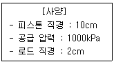
- 250π
- 500π
- 2500π
- 5000π
(정답률: 65%)
10. 아래와 같은 밸브를 사용하는 목적으로 옳은 것은?
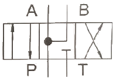
- 중립위치에서 펌프의 부하를 줄이기 위해 사용된다.
- 중립위치에서 실린더의 힘을 증대시키기 위해 사용된다.
- 중립위치에서 실린더의 후진속도를 제어하기 위해 사용된다.
- 중립위치에서 실린더의 전진속도를 빠르게 하기 위해 사용된다.
(정답률: 63%)
11. 실린더가 전진할 때 이론 출력을 구하는 식으로 옳은 것은? (단, D:실린더 내경, P:사용공기압력, d:로드 직경, 마찰력은 무시하고 로드측 압력은 대기압이다.)
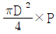
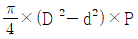
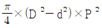
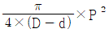
(정답률: 72%)
12. 공기압 요동형 액추에이어에 관한 설명으로 틀린 것은?
- 속도 조정은 속도제어 밸브를 미터인 방식으로 접속한다.
- 부하의 운동에너지가 기기의 허용 운동에너지 보다 큰 경우에는 외부 완충기구를 설치한다.
- 외부 완충기구는 부하 쪽의 지름이 큰 곳에 설치하여 내구성의 향상과 정지 정밀도를 확보할 수 있게 한다.
- 축과 베어링에 과부하가 작용되지 않도록 과대부하를 직접 액추에이터 축에 부착하지 않고 축에 부하가 적게 작용하도록 부착한다.
(정답률: 57%)
13. 측정값이 참값에 얼마나 가까운가를 나타내는 것은?
- 감도
- 오차
- 정도
- 확도
(정답률: 63%)
14. 피드백 제어계에서 신호흐름의 순서가 바르게 나열된 것은?
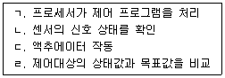
- ㄱ→ㄴ→ㄷ→ㄹ
- ㄴ→ㄹ→ㄱ→ㄷ
- ㄷ→ㄱ→ㄹ→ㄴ
- ㄹ→ㄷ→ㄴ→ㄱ
(정답률: 76%)
15. 저투자성 자동화(LCA:Low Cost Automation)의 특징이 아닌 것은?
- 단계적 자동화 구축
- 원리가 간단하고 확실
- 기존의 장비 이용 가능
- 다양한 제품에 유연하게 대응 가능
(정답률: 77%)
16. 온도센서에서 측정된 값을 PLC에서 제어하고자 한다. 이 때 적용되는 변환기는?
- A/D 변환기
- D/A 변환기
- F/V 변환기
- U/D 변환기
(정답률: 78%)
17. 입력요소 S1, S2가 동시에 작동되던지, S3이 작동되지 않는 상태에서 S4가 작동되었을 때 출력이 발생되는 제어기의 논리식으로 옳은 것은?
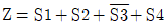
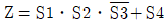
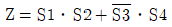
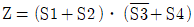
(정답률: 66%)
18. 다음 플로차트(Flow Chart) 기호의 의미는?
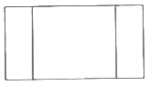
- 분지(branch)
- 전이점(move point)
- 서브루틴(subroutines)
- 일반적인 작업(general work)
(정답률: 73%)
19. 설비의 신뢰성을 나타내는 척도가 아닌 것은?
- 고장률
- 폐입률
- 평균 고장 간격 시간
- 평균 고장 수리 시간
(정답률: 81%)
20. 직류 전동기의 주요 구성 요소가 아닌 것은?
- 계자
- 격자
- 전기자
- 정류자
(정답률: 77%)
2과목: 설비진단관리 및 기계정비
21. 7개의 깃을 가진 축류펌프가 2400rpm으로 회전하고 있을 때 깃 통과주파수는?
- 40Hz
- 80Hz
- 280Hz
- 310Hz
(정답률: 55%)
22. 기계를 가동하여 직접 생산하는 시간을 무엇이라 하는가?
- 실제생산시간
- 실제조업시간
- 정미가동시간
- 직접조업시간
(정답률: 67%)
23. 특수한 고장 이외에는 사용하지 않는 예비품은?
- 부품예비품
- 라인예비품
- 단일기계예비품
- 부분적세트(set)예비품
(정답률: 59%)
24. 진동 차단기의 변위가 걸리는 힘에 비례할 때 시스템의 고유진동수(ω)와 정적변위(δ)와의 관계식으로 옳은 것은?
- ω=5πδ
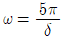
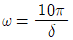
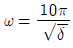
(정답률: 64%)
25. 진동방지 대책으로 스프링차단기 위에 놓아 고유진동수를 낮추는 역할을 하는 것은?
- 거더
- 고무
- 패드
- 파이버그라스
(정답률: 74%)
26. 가공 및 조립설비에서 부품 막힘, 센서의 오작동에 의한 일시적인 설비정지 또는 설비만 공회전함으로써 발생되는 로스에 해당하는 것은?
- 고장로스
- 속도저하로스
- 수율저하로스
- 순간정지로스
(정답률: 73%)
27. 설비표준화를 위한 설비위치 코드 부여 순서가 바르게 나열된 것은?
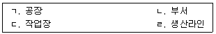
- ㄱ→ㄷ→ㄴ→ㄹ
- ㄴ→ㄷ→ㄹ→ㄱ
- ㄹ→ㄴ→ㄷ→ㄱ
- ㄹ→ㄷ→ㄱ→ㄴ
(정답률: 71%)
28. 보전표준의 종류 중 진단(diagnosis)방법, 항목, 부위, 주기 등에 대한 것이 표준화 대상인 것은?
- 수리표준
- 작업표준
- 설비점검표준
- 일상점검표준
(정답률: 76%)
29. 설비의 이상진단 방법 중 정밀진단에 해당하는 것은?
- 상대판정법
- 상호판정법
- 절대판정법
- 주파수분석법
(정답률: 73%)
30. 동점도를 나타내는 단위는?
- cm2/s
- m/s2
- s/cm2
- s/m
(정답률: 64%)
31. 보전작업표준을 설정하고자 할 때 사용하지 않는 방법은?
- 경험법
- 공정 실험법
- 실적 자료법
- 작업 연구법
(정답률: 64%)
32. 회전기계에서 발생하는 이상현상의 설명이 틀린 것은?
- 언밸런스:로터 축심 회전의 질량 분포 부적정에 의한 것으로 통상 회전주파수가 발생
- 미스얼라인먼트:커플링으로 연결된 2개의 회전축 중심선이 엇갈려 있는 경우로 통상 회전주파수 발생
- 풀림:기초볼트의 풀림이나 베어링 마모 등에 의하여 발생하는 것으로 통상 회전주파수의 고차성분이 발생
- 케비테이션:유체기계에서 국부적 압력저하에 의하여 기포가 발생하고 구압부에서 파괴될 때 규칙적인 저주파 발생
(정답률: 65%)
33. 기계의 공진을 제거하는 방법으로 적절하지 않은 것은?
- 우발력을 없앤다.
- 기계의 질량을 바꾸어 고유진동수를 변화시킨다.
- 기계의 강성을 바꾸어 고유진동수를 변화시킨다.
- 우발력의 주파수를 기계의 고유진동수와 같게 한다.
(정답률: 67%)
34. 진동과 소음에 관한 설명으로 옳은 것은?
- 소음은 진동과 전혀 상관없다.
- 공진은 고유진동수와 상관없다.
- 투과손실은 반사값만 계산한다.
- 이론상으로 차음벽 무게를 2배 증가시키면 투과손실은 6dB정도 증가한다.
(정답률: 81%)
35. MAPI(Machinery & Allied Products Institute)방식에 관한 설명으로 옳은 것은?
- 긴급도의 산출 방식이다.
- 연간 생산량의 결정 방식이다.
- 설비교체의 경제분석 방법이다.
- 인플레이션을 고려하여 분석한다.
(정답률: 67%)
36. 전기 스위치나 퓨즈(fuse) 등을 수리하지 않고 고장이 나면 교체하는 부품의 신뢰성 평가 척도는?
- 고장율
- 유용성
- 평균고장간격
- 평균고장시간
(정답률: 47%)
37. 마찰이나 저항 등으로 인하여 진동에너지가 손실되는 진동은?
- 감쇠진동
- 규칙진동
- 선형진동
- 자유진동
(정답률: 78%)
38. 사용 중인 설비의 고장정지 또는 유해한 성능저하를 가져오는 상태를 발견하기 위한 보전은?
- 개량보전
- 보전예방
- 사후보전
- 예방보전
(정답률: 74%)
39. 보전작업의 낭비를 제거하여 효율성을 증대시키기 위한 것으로 보전작업 측정, 검사 및 일정계획을 위해서 반드시 필요한 것은?
- 설비보전표준
- 설비효율측정
- 로스(loss) 관리
- 설비 경제성 평가
(정답률: 68%)
40. 운전 중에 실시되는 수리작업을 무엇이라고 하는가?
- SD(Shut Down)
- 유닛(unit) 방식
- OSR(On Stream Repair)
- OSI(On Stream Inspection)
(정답률: 80%)
3과목: 공업계측 및 전기전자제어
41. 시퀀스제어에서 사용되는 조작용 기기에 속하지 않는 것은?
- 캠스위치
- 압력스위치
- 토글스위치
- 선택스위치
(정답률: 50%)
42. 그림의 트랜지스터 기호에서 A가 표시하는 것은?
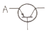
- 게이트
- 베이스
- 콜렉터
- 이미터
(정답률: 65%)
43. 역률 80%인 부하의 전력이 400kW 이라면 무효전력은 몇 kVar인가?
- 200
- 300
- 400
- 500
(정답률: 49%)
44. 대칭 3상 교류에 대한 설명으로 옳은 것은?
- 각 상의 기전력과 전류의 크기가 같고 위상이 120도인 3상 교류
- 각 상의 기전력과 전류의 크기가 같고 위상이 240도인 3상 교류
- 각 상의 기전력과 전류의 크기가 다르고 위상이 120도인 3상 교류
- 각 상의 기전력과 전류의 크기가 다르고 위상이 240도인 3상 교류
(정답률: 71%)
45. 절연 저항계에 대한 설명으로 적합하지 않은 것은?
- 발전기식과 전지식이 있다.
- 영구자석과 교차코일로 구성되어 있다.
- 매거(megger)는 절연 저항계의 일종이다.
- 발전기식의 경우 핸들의 분당 회전수는 60을 표준으로 하고 있다.
(정답률: 62%)
46. 교류의 정현파에서 주파수가 1kHz일 때 주기는?
- 1ms
- 1μs
- 1ns
- 1ps
(정답률: 64%)
47. 10진수 25를 2진수로 변환하면?
- 10011
- 11010
- 11001
- 11100
(정답률: 69%)
48. 신호변환기에서 다음 중 필터링에 대한 설명으로 옳은 것은?
- 트랜스를 이용한다.
- 포토커플러를 이용한다.
- 검출신호의 비선형성을 선형화한다.
- 잡음에 의한 수신계의 오동작을 방지한다.
(정답률: 63%)
49. 열전대는 어느 현상을 이용하여 온도를 측정하는 것인가?
- 온도에 의한 열팽창을 이용한 것
- 온도에 의한 저항변화를 이용한 것
- 온도에 의한 화학적 변화를 이용한 것
- 온도에 의한 열기전력의 발생을 이용한 것
(정답률: 71%)
50. 쿨롱의 법칙을 설명한 것 중 틀린 것은?
- 서로 다른 부호인 경우 두 자극은 끌어 당긴다.
- 그 힘의 방향은 두 자극을 이은 직선 위에 있다.
- 두 자극 사이에 작용하는 힘의 크기는 두 자극의 세기의 곱에 비례한다.
- 두 자극 사이에 작용하는 힘의 크기는 두 전하 사이의 거리의 제곱에 비례한다.
(정답률: 60%)
51. 프로세스 제어시스템에서 조작부의 구비조건으로 틀린 것은?
- 보수점검이 용이할 것
- 제이신호에 정확히 동작할 것
- 응답성이 좋고 히스테리시스가 클 것
- 주위환경과 사용조건에 충분히 견딜 것
(정답률: 80%)
52. 다음의 압력의 크기 중에서 값이 다른 것은?
- 1psi
- 0.71 Ib/ft2
- 0.0703kg/cm2
- 51.715mmHg
(정답률: 53%)
53. 다음 중 1eV에 해당하는 것은?
- 1.602×10-19J
- 1.602×10-19CㆍW
- 1.602×10-19Vㆍm
- 1.602×10-19Cㆍkg
(정답률: 61%)
54. 다음 논리회로도의 출력식은?
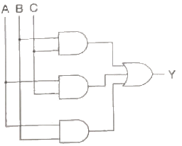
- Y=ABC
- Y=A+B+C
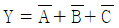
- Y=AB+BC+AC
(정답률: 72%)
55. 100Ω과 400Ω인 두 개의 저항을 병렬로 연결하였을 때 합성저항은 몇 Ω인가?
- 80
- 250
- 400
- 500
(정답률: 59%)
56. PD 미터라고도 부르며 오발기어식과 루츠미터식이 대표적인 유량계는?
- 면적식 유량계
- 용적식 유량계
- 차압식 유량계
- 터빈식 유량계
(정답률: 62%)
57. 프로세스 제어에 속하는 것은?
- 장력
- 압력
- 전압
- 주파수
(정답률: 44%)
58. 전류가 흐르는 두 평행 도선 간에 반발력이 작용했다면 두 도선의 전류방향은?
- 같은 방향이다.
- 반대 방향이다.
- 서로 수직방향이다.
- 전류방향과는 관계없다.
(정답률: 65%)
59. 자동제어의 분류 중 페루프 제어에 해당되는 내용으로 적합한 것은?
- 시퀀스제어 시스템이다.
- 피드백(feed back)신호가 요구된다.
- 출력이 제어에 영향을 주지 않는다.
- 외란에 대한 영향을 고려할 필요가 없다.
(정답률: 70%)
60. 이득을 나타내는 단위는?
- A
- C
- dB
- kW
(정답률: 63%)
4과목: 기계정비 일반
61. 핀(Pin)에 대한 설명 중 잘못된 것은?
- 핀은 주로 인장력이나 압축력으로 파괴된다.
- 종류에는 평행 핀, 스프링 핀, 분할 핀 등이 있다.
- 분할 핀은 코터이음 및 너트의 풀림 방지용으로 사용된다.
- 경하중의 기계부품을 결합하거나 위치 결정용에도 사용된다.
(정답률: 59%)
62. 두 기어 사이에 있는 기어로 속도비에 관계없이 회전방향만 변하는 기어는?
- 웜 기어
- 아이들 기어
- 구동 기어
- 헬리컬 기어
(정답률: 66%)
63. 펌프에서 발생하는 이상 현상 중 수격현상에 관한 설명으로 옳은 것은?
- 관로의 유체가 비중이 낮아 흐름속도가 빨라지는 현상이다.
- 펌프내부에서 흡입양정이 높아 유체가 증발하여 기포가 생기는 현상이다.
- 배관을 흐르는 유체에 불순물이 섞여 관로에서 충격파를 발생시키는 현상이다.
- 배관에 흐르는 유체의 속도가 급격한 변화에 의해 관내 압력이 상승 또는 하강하는 현상이다.
(정답률: 78%)
64. 다음 중 고무벨트의 특징이 아닌 것은?
- 유연하고 밀착성이 좋아 미끄럼이 적다.
- 열과 기름에 약하여 장시간 연속운전에 손상되기 쉽다.
- 내습성이 좋아 습기가 많은 곳에 사용하기에 알맞다.
- 다른 벨트에 비해 수명이 길고 연신율이 작아 고 정밀도의 큰 동력을 전달한다.
(정답률: 58%)
65. 접선 키에서 120°의 각도로 두 곳에 한 쌍의 키를 사용하는 가장 큰 이유는?
- 큰 회전력을 전달하기 위하여
- 축에서 보스를 이동하기 위하여
- 축의 강도 저하를 방지하기 위하여
- 정, 역회전을 가능하게 하기 위하여
(정답률: 63%)
66. 펌프 흡입관 배관 시 주의 사항으로 맞지 않는 것은?
- 흡입관 끝에 스트레이너를 설치한다.
- 관의 길이는 짧고 곡관의 수는 적게 한다.
- 배관은 펌프를 향해 1/100 내림 구배 한다.
- 흡입관에서 편류나 와류가 발생치 못하게 한다.
(정답률: 66%)
67. 합성고무와 합성수지 및 금속 클로이드 등을 주성분으로 한 액상 개스킷의 사용방법으로 옳지 않은 것은?
- 얇고 균일하게 칠한다.
- 바른 직후 접합해도 관계없다.
- 사용온도 범위는 0~30℃까지 이다.
- 접합면의 수분, 기름, 기타 오물을 제거한다.
(정답률: 71%)
68. 펌프의 부식 작용 요소로 맞지 않는 것은?
- 온도가 높을수록 부식되기 쉽다.
- 금속 표면이 거칠수록 부식되기 쉽다.
- 유체 내의 산소량이 적을수록 부식되기 쉽다.
- 재료가 응력을 받고 있는 부분은 부식되기 쉽다.
(정답률: 79%)
69. 다음 중 주철관에 대한 설명으로 틀린 것은?
- 내식성이 풍부하다.
- 내구성이 우수하다.
- 강관보다 가볍고 강하다.
- 수도, 가스, 배수 등의 배설관으로 사용된다.
(정답률: 71%)
70. 다음 중 유체의 역류를 방지하는 밸브로 가장 적합한 것은?
- 체크 밸브
- 앵글 밸브
- 니들 밸브
- 슬루스 밸브
(정답률: 80%)
71. 수격현상에서 압력 상승 방지책으로 사용되지 않는 것은?
- 밸브의 제어
- 흡수조의 사용
- 안전밸브의 사용
- 체크밸브의 사용
(정답률: 67%)
72. 전동기의 고장현상 중 기동불능의 원인으로 가장 거리가 먼 것은?
- 퓨즈 단락
- 베어링의 손상
- 서머 릴레이 작동
- 노 퓨즈 크레이크 작동
(정답률: 55%)
73. 다음 중 직접측정의 장점이 아닌 것은?
- 제품의 치수가 고르지 못한 것은 계산하지 않고 알 수 있다.
- 양이 적고 종류가 많은 제품을 측정하기에 적합하다.
- 측정물의 실제치수를 직접 잴 수 있다.
- 측정범위가 다른 측정방법보다 넓다.
(정답률: 62%)
74. 송풍기의 진동 원인으로 가장 거리가 먼 것은?
- 축의 굽음
- 임팰러의 마모
- 모터의 용량 증가
- 임펠러에 더스트(dust) 부착
(정답률: 55%)
75. 체결 후 장기간 방치한 볼트와 너트가 고착되는 가장 주된 원인은?
- 조임 시 적절한 체결용 공구를 사용하지 않았을 때
- 너트 조임 시 수용성 절삭유를 사용하지 않고 조임 했을 때
- 볼트와 너트 가공 시 재질이 고르지 않고 표면 거칠기가 클 때
- 틈새로 수분, 부식성 가스가 침입하거나 가열시 산화철이 발생했을 때
(정답률: 75%)
76. 키 맞품을 위해 보스의 구멍 지름, 홈의 깊이 등을 측정할 때 가장 적합한 측정기는?
- 강철자
- 틈새게이지
- 마이크로미터
- 버니어 캘리퍼스
(정답률: 73%)
77. 육각 홈이 있는 둥근 머리 볼트를 체결할 때 사용하는 공구는?
- 훅 스패너
- 육각 L-렌치
- 조합 스패너
- 더블 오프셋 랜치
(정답률: 80%)
78. 송풍기의 회전수를 변화시키는 방법이 아닌 것은?
- 가변 풀리에 의한 조절
- 정류자 전동기에 의한 조절
- 극수 변환 전동기에 의한 조절
- 열동 과전류 계전기에 의한 조절
(정답률: 58%)
79. 송풍기의 베어링 과열 원인이 아닌 것은?(오류 신고가 접수된 문제입니다. 반드시 정답과 해설을 확인하시기 바랍니다.)
- 베어링의 마모
- 베어링 조립 불량
- 임펠러(impeller)의 부식
- 그리스(grease)의 과충전
(정답률: 51%)
80. 유도전동기에서 회전수(Ns), 극수(P) 및 주파수(F)의 관계식이 옳은 것은?
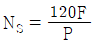
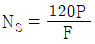
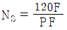
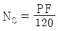
(정답률: 65%)